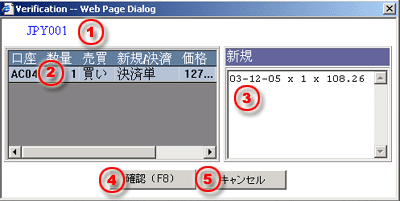

注文の確認
取引デスクへ取引指示を行う前に確認表示画面を開くことが出来ます。お客様は以下のインフォメションをよく理解して為替取引を行なって下さい。
| 1 | 手段 - 取引の必要手段コード |
 確認画面 |
| 2 | 取引詳細 - 取引明細には口座状況、取引数量、売買、新規、指値注文/ストップオーダー、決済等があります。 | |
| 3 | 新規 - けｔ、新規記載事項は日付、kwッ際数量ろその付け値を含まれているのです。 | |
| 4 | 確認する（F8） - 取引デスクへその成約した注文を受けるボタン | |
| 5 | キャンセル - 取引のキャンセルや取引指令画面から退去するボタン |